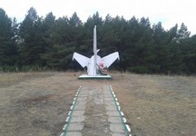
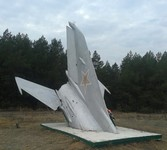
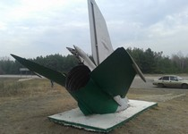

Памятник летчику в виде хвостового оперения самолёта МИГ-21УБ стоит на трассе «Каспий» М-6. Памятник летчику-инструктору, капитану ВВС Попову Виктору Борисовичу из Ульяновска. Даты жизни 18 февраля 1961 г.р. - 23 мая 1989 дата смерти.

Памятник летчику
Описание
Что произошло
19 апреля 1989 г. в 10ч. 12 мин. утра на одном из аэродромов Борисоглебского высшего военного авиационного
ордена Ленина Краснознаменного училища лётчиков имени В.П. Чкалова самолет МИГ-21УБ пилотировался курсантом
Мишкинисом и летчиком-инструктором капитаном Поповым В.Б. Выполнялся учебный полет со взлетом с "конвейера" (чтобы, не останавливаясь полностью на полосе после приземления, ещё раз взлететь).
После взлета на высоте 150 м в двигатель самолета попала птица, двигатель остановился, на самолете начался пожар.
Летчик-инструктор Попов В.Б. привел в действие устройство катапультирования.
Курсант остался жив (впоследствии, через 2 месяца подал рапорт на увольнение из ВВС СССР).
Попов В.Б. из-за нештатного срабатывания катапульты получил травму несовместимую с жизнью и скончался в авиационном госпитале Воронежа.
Фотографии
  
Расположение
 )
)
Расположение Памятника летчику на интерактивной карте
Памятник летчику расположен на трассе М6 Москва-Волгоград.
Ориентир, если ехать с московского направлления - пересечение границы Волгоградской области, проехать еще около 10,5 километров.
Ориентир, если ехать со стороны Волгограда - поврот на Новониколаевск, проехать еще около 13 километров.